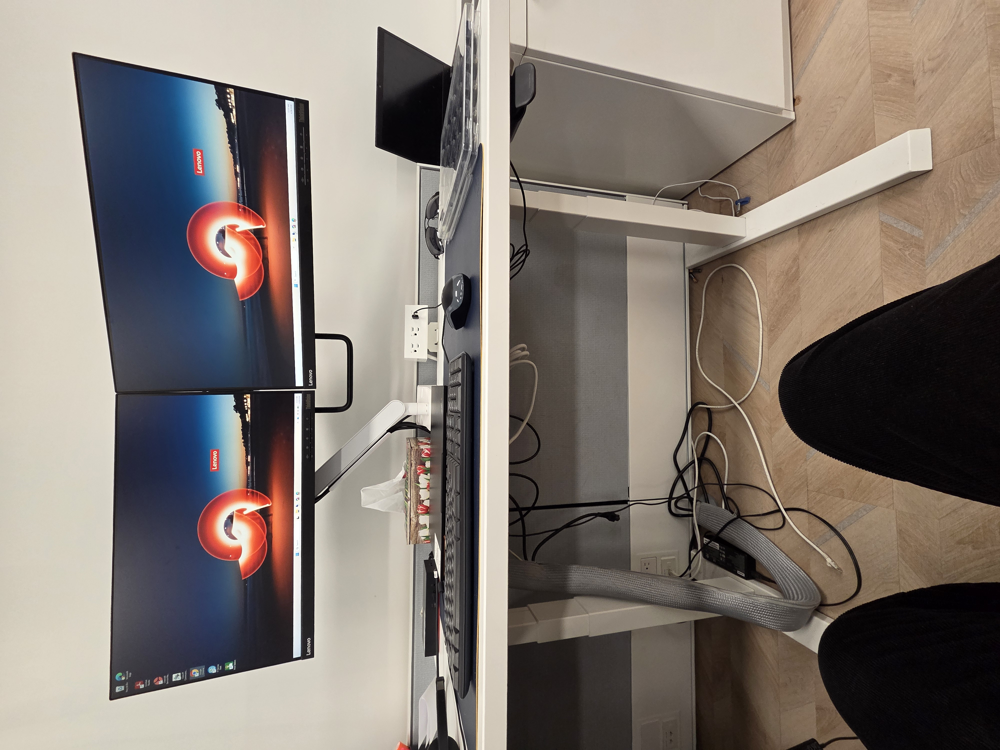
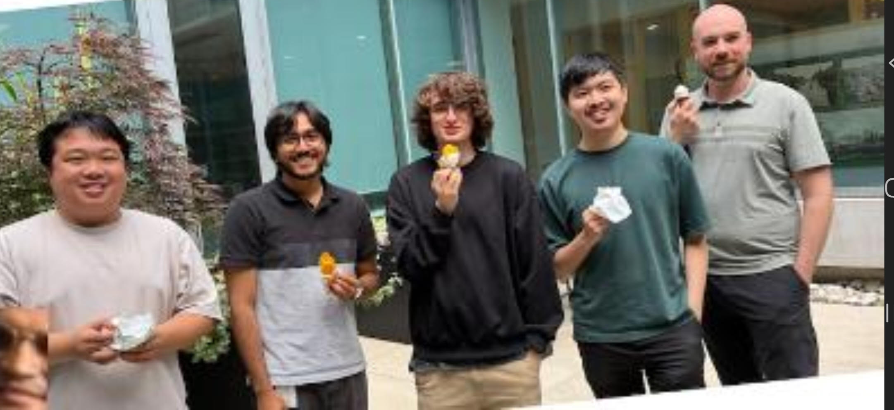

A reflection on my second work term as an IT Service Desk Support Co-op with the City of Guelph and the skills I continued to develop through my experience.
Welcome to my second work term report. This page reflects on my continued experience working as an IT Service Desk Support Co-op with the City of Guelph. After completing my first work term, I returned to the same position and was able to build upon the knowledge and skills I developed during my previous experience.
During my second work term, I became more familiar with the IT Service Desk environment and was able to take on problems with more independence. I continued assisting employees with technical issues, managing support tickets, troubleshooting problems, and communicating with users.
My second work term allowed me to build on the skills I developed during my first term and become more confident working independently in an IT support environment.
The City of Guelph is a municipal government organization that provides a wide range of public services to the community. The Information Technology department supports the technology infrastructure required by employees across the organization.
During my second work term, I continued working as part of the IT Service Desk team. The Service Desk provides technical assistance to employees through phone calls, support tickets, and walk-in requests. The team assists with hardware, software, accounts, mobile devices, and other technology related issues.

To get closer and bond with the tiem the city of Guelph, and the IT department provided social events such as an IT potluck, weekly ice cream socials, and a barbeque to allow us to netowrk with coworkers in the city.

Skills and objectives I focused on during my second work term.
During my second work term, I focused on becoming more having a deeper understanding of the systems,software, and tools the City of Guelph uses. Over time, by constantly using the Cherwell ticketing system, I learned the ins and outs of it and learned how to use it efficiently and effectively to resolve tickets. I was able to familiaize my self with the remote desktop system to help remote on to others' computers and help solve issues and use active directiory to give permissions to users
I continued developing my commuhnication and listening skills by seeing examplles by my coworkers and practicing I was able to pick up on what were the most effective questiohns to ask such as if the user was working from home or office, Asking questions that could isolate the cause of the issue which allowed me to develop my listening skills and understand thier problems effienttly
I continued improving my ability to adapt though this role as it put me in many different situations in which adaptability was a major skill that needed to be learned for example when in office, I had to balance being on queue while also managing walkins. I would have to be able to adapt as solving a problem in person was a little easier than over call in which I wouold have to ask more questions to clearify what is going on and what is causing a problem such as a phone issue over the phone
I continuted developing my attention to detail through termination tickets These were a big place where this skill has been enhanced, as it is important to make sure you terminate the right person and not the supervisor. Another thing is that you need to look at the details of a users profile in active directory and be able to add the right teams to tasks to remove access to certain software.
I continued working on increasing my confidence in the role by taking more tickets and exposing myself to different problems. After seeing more and more problems, I was able to solve most problems by myself as I had experence in seeing problems such as issues with MFA, VPN, or various software. If a new issue came up I would be able to ask the right questions and ask for help if it was something I do not have access to do. Over time in my role, I understood what I could and could not do.
One of the main benefits of returning for a second term was being able to build upon the knowledge I gained previously. Instead of learning the Service Desk environment from the beginning, I could focus on improving my existing skills and taking on responsibilities with greater confidence.
During my second co-op placement as an IT Service Desk Support Co-op with the City of Guelph, I continued providing technical support to city employees. Support requests were received through the ticketing system, phone queue, and walkins.
My responsibilities included troubleshooting hardware and software problems, assisting with computer and mobile device setups, installing applications, resetting passwords, managing user accounts, and assisting with other technical and hardware issues.
Compared to my first work term, I was able to approach many of these responsibilities with greater confidence and independence. My previous experience allowed me to understand the team's procedures and recognize common problems more quickly.
My second work term with the City of Guelph allowed me to continue developing the technical and interpersonal skills I gained during my first placement. Returning to the same position gave me the opportunity to take on tasks with greater confidence and work more independently.
This experience strengthened my adaptability, communication and listening skills , attention to detail, confidence and independance, and abiilty to understand systems used by the city. It also gave me a better understanding of the responsibilities involved in working in a professional IT environment.
Overall, my second work term was an important continuation of my professional development and provided valuable experience that I can carry forward into future co-op positions and my career in computer science. I would like to thank the city of Guelph for giving me the opertunity to gain experience in the IT field.